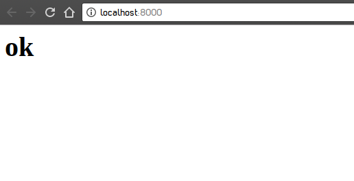
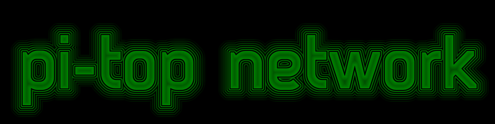

guide time.
how to turn your pi-topCEED or pi-top[3] into a simple web server.
this isn't for large scale projects as it is only static as far as i have been able to go.
step 1: create a new folder for your website. for this guide we'll call it "web".
step 2: add an index.html file. i recommend using Geany to edit your website.
step 3: open a terminal window and run the following command: cd web && python3 -m http.server
your server should now be running at localhost:8000.


Not associated with pi-top or CEED LTD in any way.